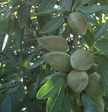

Amandier

Amandier (Prunus dulcis de la famille des Rosacées)
Très toxique par ingestion.
Partie toxique pour les chats en général et le Korat en particulier :
Noyau.
Symptômes du processus pathologique :
Dyspnée sévère avec tremblements musculaires et convulsions ; les muqueuses sont rouge brillant et la mort survient brutalement.
Origine de la toxicité (principe actif) :
Un hétéroside cyanogénétique, l'amygdaloside.